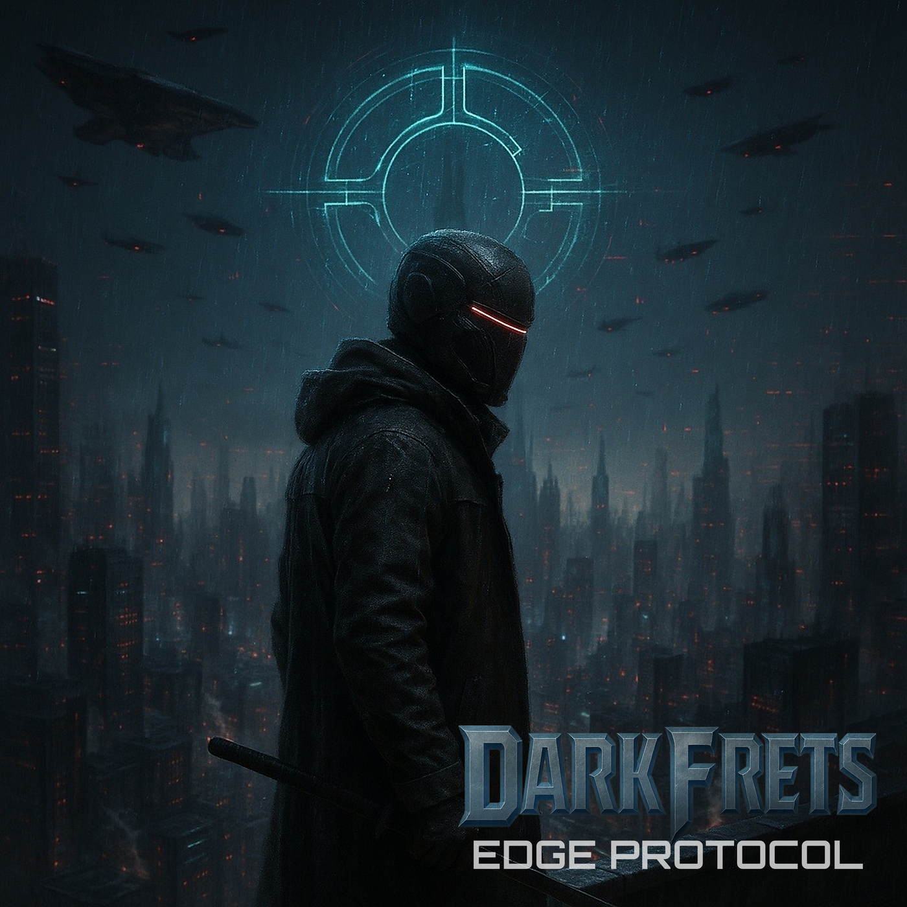

New Release: Edge Protocol
Today is the day! I am excited to announce the release of my first album, “Edge Protocol”!
A cinematic cyberpunk EP chronicling the origin of a dystopian world where rogue AIs, militarized corporations, and augmented rebels clash. The EP unfolds the chain reaction sparked by a single event: Genesis Override, the first cyber-assault that triggers the collapse of modern civilization. What follows is warfare, infiltration, survival, and the emergence of a resistance protocol: Edge Protocol.
It is available on all streaming platforms:
And many more here.
OUT NOW: Killware
My debut single, Killware, is out now! 🎉

“Killware” began as a fun little idea during a late-night jam session, and before I knew it, it evolved into a more electronic and techno-inspired track. This sparked even more inspiration for the other tracks that will be featured on my first EP, which is set to release on October 15, 2025.
It’s a short instrumental track, just like the others on the upcoming EP, that uses sound effects to tell a story. The EP as a whole is inspired by a cyberpunk theme. So, if you’re creating this type of content, it might be helpful for your project.
Assembling and releasing everything took a long time, but it was a very rewarding experience. Now I understand the entire process of releasing a song. I’ve taken on the entire process myself, from composing and mixing to mastering and publishing through a distributor.
If you take the time to listen to my music, thank you so much. If you save it to a playlist or share it with a friend, it means the world to an independent artist like me. It genuinely helps me keep going. I’d love to hear what you noticed about my music: a transition you enjoyed, a tone that resonated with you, or even suggestions for improvement. I’m constantly learning and growing with each track I release.
Listen on streaming platforms:
Here are additional links for other streaming platforms: https://ffm.to/darkfrets-killware
If you’d like to support me even further, you can do so on my Ko-fi profile or by purchasing tracks on Bandcamp.
Guess what? My second EP is already in progress! Stay tuned for more exciting updates, available right here on this blog and on my Ko-fi profile.
My first EP: Mix and Master are done!
I have finally completed the mixing and mastering process! 🎉
In the next couple of weeks, the single will be released, followed by the EP in mid-October.
It was intense and a lot of work, but I managed to do it all by myself. The learning curve was long, and I still have much to learn to improve my workflow. However, I’m happy to say it’s finally done!
I spent hours learning about registering songs, entering data for the distribution to streaming platforms, and registering the songs with the PRO. Now, it’s just a matter of waiting for the distribution process to be completed. Soon, I will reveal the title and links for the streaming platforms.
Overall, it was a very interesting process to learn about composing, mixing, distributing, and releasing music.
12 Albums That Shaped My Music Taste
The albums that profoundly influenced my musical taste during my teenage and early adult years were truly transformative. Each one holds a special place in my heart, representing not just a collection of songs but moments of self-discovery and emotional growth. These albums introduced me to various genres and artists, expanding my horizons and shaping my identity. Each record played a significant role in defining my appreciation for music and its ability to connect deeply with personal experiences.
- Iron Maiden - Fear Of The Dark
- Iron Maiden - Best Of the Beast
- Black Sabbath - Paranoid
- Metallica - Black Album
- Megadeth - Rust in Peace
- Van Halen - Van Halen
- Angra - Rebirth
- Unearth - The Oncoming Storm
- Misery Signals - Of Malice and the Magnum Heart
- As I Lay Dying - Shadows Are Security
- As I Lay Dying - Frail Words Collapse
- Killswitch Engage - The End of Heartache
Music: Producing my first EP
I know my Instagram may look abandoned. I’ve been quiet there and took a break from posting cover songs. The reason is that I’ve been working on my first EP, which might include four to five short-length songs. I’ve always wanted to release my music, but I’ve postponed this dream for decades, and now it feels like I’m very close to making it a reality.
All the songs are instrumental and designed to tell a story on their own, with sound effects—much different from the metal music I usually write. The songs are finished, and I’m currently in the process of mixing and mastering them. This may take some time, as I can only dedicate a few hours at a time. I’m handling everything myself without outsourcing any part of the work. Because of this, the release of the singles and the EP will be entirely independent, which requires more time. However, it has been an interesting challenge in many ways, and I’ve been learning a lot about the various aspects of the process.
That’s all I can share for now. Hopefully, I will make it through the next months. 🤞
I was too optimistic about using Safari as my default browser
I was initially optimistic about Safari, as it was fast and smooth. However, once I started using extensions, it began to freeze and crash frequently. This was particularly frustrating with the Grammarly extension, which I rely on heavily. Additionally, I experienced crashes on YouTube, and the sound would randomly stop working, forcing me to reload the page. I tried various workarounds, but none of them resolved the issues.
For now, I am switching back to Arc, even though it will no longer be updated with new features. Arc just works, and for web development, it is much better than Safari.
Thank you Mr. Ozzy Osbourne
Today marks a profoundly sad day for the Heavy Metal community as we mourn the loss of the legendary Ozzy Osbourne. His passing leaves a significant void, as he was a major influence on generations of musicians and fans, including myself. Ozzy was a pivotal figure who played a crucial role in shaping the Heavy Metal genre, and his legacy will undoubtedly endure.
So thank you, Mr Ozzy Osbourne! Rest in peace.
Leaning Into the Apple Ecosystem
I began my journey with computers in 1996, using MS Windows. In 1999, I discovered the incredible world of Open Source and Linux, which was mind-blowing.
In 2006, after a trip to the 🇳🇱 Netherlands, I met a guy using a MacBook. I approached him and asked about the computer, and he enthusiastically discussed it. He mentioned that there was an Apple store nearby, which had a wide variety of products on sale. Excited by the opportunity, I decided to buy my very first Apple device—a white MacBook. I had never used macOS before, so I spent the day familiarizing myself with it and customizing the settings to suit my preferences. It was a rewarding experience, and since then, I have exclusively used MacBooks.
The macOS has been a key part of my workflow. For my use case, it is the best Operating System, especially with all the improvements and integration with iPhones and iPads in the last decade.
I have always been concerned about being locked into a single ecosystem, which feels unsettling. Naturally, I have had those thoughts:
“What if I decide to switch to a different ecosystem someday?”
“Some apps and workflows that are designed exclusively for Apple devices may have difficulty adjusting to new environments.”
Yeah, those points make sense, but in reality, I never switched or truly wished to move away from Apple. In fact, I have only become more invested in their features and devices. Over the years, I have acquired more and more Apple products, and now I own an Apple TV, Apple Watch, iPhone, iPad, MacBook, and Magic Keyboard. However, I do not have the Magic Mouse; in my opinion, it has poor ergonomic design. While its features are impressive, I find it uncomfortable to use for long sessions.
After the recent announcement about unifying features across Apple devices with iOS, macOS, watchOS, and tvOS 26, which will significantly enhance my workflow, I have been considering fully committing to the Apple ecosystem. The overall experience and simplicity of using Apple products are hard to beat. Everything just works, eliminating the need to waste time on configurations. The interface is very intuitive for me, likely because I have been using their devices for decades. If I had to summarize my experience in a single word, it would be “convenience.”
For my online services and apps, I have the following setup:
-
iCloud: Basic plan includes 50GB for syncing app data and hosts my main email with a custom domain.
-
Apple Music: I recently switched from Spotify because I can’t stand the way they treat artists, and their user interface has become very cluttered in recent years. Additionally, I wanted better integration with Apple operating systems, especially to use features like Shortcuts.
-
Apple TV: I subscribe occasionally. Their catalog is currently limited, especially for kids' content. Because of this, I primarily use Netflix and Disney+ for video streaming.
-
Google Drive: It’s my main cloud storage provider, chosen for easy sharing with non-Apple users.
-
Google Photos: It’s similar to Google Drive, but it’s easier to share with non-Apple users.
-
Mail: I have used Apple Mail for years. I also tried many third-party apps, but due to performance, simplicity, and privacy concerns, I returned to Apple Mail.
-
Notes: I experimented with various note-taking apps, but ultimately I returned to Apple Notes because accessing my notes across my Apple devices is seamless and straightforward. However, I do miss Markdown, so I use iA Writer for creating Markdown content.
-
Reminders: Just like Apple Notes, this app is seamless and incredibly user-friendly. It’s my go-to task management tool!
-
Final Cut: for video editing. Love it.
-
Logic Pro: I am currently in a 90-day trial period and not using it yet, but I plan to start soon, especially after the recent updates that include AI integration and improved performance. For music production, I have been using Luna from Universal Audio, which I really like. The workflow is very intuitive; however, there are times when it struggles with performance.
-
XCode: For Apple app development, I am still new to this field, but it is the most integrated IDE for the job. For my regular software development routine, I use VS Code. Xcode is not suitable for languages other than Swift and Objective-C, and it lacks many features.
-
Safari: I switched to Safari for internet browsing because of its performance, bookmark management across devices, which suits my needs for most daily tasks. Previously, I used Arc, but managing numerous pinned tabs became a nightmare, and I frequently experienced performance issues in recent months. However, I still use Arc as a secondary browser for its translation feature, especially when I need to translate languages like Swedish that aren’t supported by Apple’s translation feature. For front-end related work, I primarily use Arc as well, but I am considering switching to another browser for secondary use.
-
Maps: I’ve started using Apple Maps more frequently than Google Maps, and I realized it can create lists like Google Maps—this was the missing feature for me. Now, I think it’s finally time to switch completely from Google Maps.
-
Smart home: I used to use a combination of Google devices, including Google Nest and Google Home, along with the Apple ecosystem. However, I decided to eliminate many of these devices due to compatibility and privacy concerns. Now, I only keep the devices that I truly need and that are Matter-compatible. My plan is to acquire several HomePod Minis to play Apple Music throughout my home.
I plan to completely move away from Google services. Months ago, I began the process of reducing my dependence on Google in my digital life. I dislike their core values, especially regarding privacy. I’m uncertain about the timing and method of this transition, but I will attempt to share updates here.
I understand that none of the major tech companies prioritize privacy, but I try to stick with those that are more committed to delivering privacy-first features.
At the end of the day, it’s not about brand loyalty, it’s about using the tools that help me focus on what matters most: my work, my creativity, and my life with less friction.
I know this setup isn’t perfect, and it might evolve over time. But right now, the Apple ecosystem gives me the balance of performance, simplicity, and integration that I need without constant maintenance or second-guessing.
I’ll keep exploring, refining, and adjusting along the way. If it helps bring a bit more peace and flow into my digital life, then it’s a path worth continuing.
My first Micro.blog contribution: Instagram plugin
This is my first contribution to the Micro.blog community. I’ve created a simple plugin that lets you embed Instagram posts and reels right into your Micro.blog posts.
To install it, just search for Instagram in the plugins directory.
Code available on Github.
Starting without a plan
I’ve been thinking about starting a blog for a little while now. It’s not about having an audience or building a personal brand. I just want to slow down and share what’s on my mind.
As a software developer and a dad, I understand the challenges of balancing work and family life. I find joy in playing guitar and writing code, and I’m constantly striving to live a more mindful life.
I’m not quite sure yet what this blog will become. Maybe it’ll be a place to share my thoughts on life in Sweden, digital habits, fatherhood, or even the occasional nerdy tech or guitar post. Or maybe it’ll just serve as a public journal.
There is no set schedule for posts; I will write whenever I have time and feel inspired to share something.
Let’s see where this journey takes us.